優惠券
建立優惠券、在客服對話中直接發給顧客，顧客在手機上開券；店員用驗證碼或核銷台確認使用，後台隨時看得到誰領了、誰用了。
1 這章能做什麼
優惠券從左側選單「行銷與渠道 → 行銷 → 優惠券」進入。一張券從建立到使用，會經過下面四步：
能做哪些事，取決於帳號的權限：
| 權限 | 可以做的事 | 預設角色 |
|---|---|---|
| 檢視優惠券 | 看優惠券列表、詳情、序號明細與報表 | 管理員、主管、座席 |
| 管理優惠券 | 建立、編輯、發布、暫停、提前結束、複製、刪除草稿 | 管理員 |
| 發送優惠券 | 在收件匣對話中發券 | 管理員、主管、座席 |
| 檢視門市與核銷帳號 | 看門市列表、核銷帳號與櫃檯海報 | 管理員 |
| 管理門市與核銷帳號 | 新增門市、停業、建立核銷帳號、重設密碼、停用與強制登出 | 管理員 |
2 建立優惠券：每個欄位的意思
在優惠券列表按右上角「建立優惠券」。表單分成七個區塊，每個選擇都會改變下方要填的內容。右側「設定進度」顯示每塊是否完成，以及這張券的「最壞成本」；手機版的設定進度在表單上方，可展開或收合，但不顯示最壞成本。
- 券型、用途分類、效期模式、序號模式、誰來核銷這五組選項預設都不選，標籤旁標示紅字「必填」。存草稿時可以先不選，發布時一定要選。
- 區塊右上角的小標籤：「已確認」表示填好了，「請確認」表示有需要留意的設定，「N 個錯誤」表示有欄位要修正，「沿用預設」表示沒改過預設值。
- 標示發布後鎖定的欄位，發布後就不能修改，欄位會變成灰底並寫「優惠券發布後無法修改」。
① 基本資料：顧客在券夾與券詳情看到的內容
| 欄位 | 意思與規則 |
|---|---|
| 券名稱 必填 | 顯示在顧客的票券卡上。最多 30 字，右下角顯示「剩 N 字」。存草稿時也必須填。 |
| 使用條款 | 一行寫一條，顯示在顧客的券詳情頁，每行變成一個項目符號。例如「限直營門市使用」「不得與其他優惠併用」。 |
| 券面圖 | 取代票券上半部的預設綠色底圖。只收 JPG、PNG，2MB 以內，建議 1040×520（2:1）。比例不是 2:1 時會置中裁切。沒有上傳時用預設券面（純色底加券名稱）。上傳後可「更換圖片」或「刪除」。 |
② 券型與用途：決定折扣怎麼算、由誰發
券型發布後鎖定（選了之後，下方才會出現對應的欄位）：
| 券型 | 會出現的欄位 | 規則 |
|---|---|---|
| 元折抵 折抵固定金額 | 折抵金額（NT$） 必填 | 要大於 0，而且要小於最低消費門檻 |
| 最低消費門檻（NT$） | 0 表示不限。顯示在顧客券上（「滿 NT$1,000 可用」），店員核銷時也會看到 | |
| % 折扣 依比例折抵 | 折掉幾 % 必填 | 輸入 1–99，畫面會即時換算，例如 15 ＝打 85 折，原價 NT$1,000 付 NT$850。超過 50 會提醒「折掉超過一半，請確認沒有輸入錯誤」 |
| 折抵上限（NT$） | 留空表示不設上限 | |
| 贈品 送實體贈品 | 贈品名稱 必填 | 最多 50 字，例如「電鍋專用蒸架」 |
| 每張券可兌換數量（份） | 預設 1，至少 1 | |
| 兌換 換品項或服務 | 兌換品項 必填 | 最多 50 字，例如「冷氣免費清洗一次」 |
| 品項價值上限（NT$） | 留空表示不設上限 |
用途分類發布後鎖定：
| 選項 | 意思 |
|---|---|
| 客服補償 | 座席可以在收件匣的對話中直接發給顧客，發放紀錄計入客服補償。要在對話中發券，一定要選這個。 |
| 行銷推廣 | 由行銷人員透過活動、廣播或短連結發放，座席不能在對話中發送。成效計入行銷報表。 |
③ 效期：券什麼時候失效發布後鎖定
| 效期模式 | 要填的欄位 | 實際怎麼算 | 適合 |
|---|---|---|---|
| 固定起訖 | 生效日、失效日 | 所有人的券同一天到期。生效日從當天 00:00 起，失效日到當天 23:59:59 為止（台灣時間）。生效日不能早於今天，失效日要晚於生效日；失效日已過的券無法發布。 | 檔期活動 |
| 領取後 N 天 | 有效天數（預設 30） | 從顧客領取當天（台灣日期）起算 N 天，到那一天結束。例如 10/1 領取、30 天，10/31 23:59 到期。每個人的到期日不同。 | 入會禮、客服補償 |
| 開啟後 N 分鐘 | 有效時間（預設 15 分鐘） | 從顧客點開券開始倒數。顧客使用前會先跳確認「開啟後須在 N 分鐘內使用，確定開啟？」，開啟後畫面顯示剩餘時間，重複開啟不會重新計時。 | 防囤券、店內即用 |
剩 3 天內到期的券，顧客端會顯示「即將到期：餘 N 天」。
④ 券號：每張券的號碼怎麼產生發布後鎖定
| 序號模式 | 要填的欄位 | 說明 |
|---|---|---|
| 一人一碼 | 券號前綴 | 每位顧客拿到不同的券號，可以追蹤到個人。前綴只能英文與數字，最多 8 碼，會自動轉大寫。實際產生的格式是「前綴-10 碼」，例如 DEMO-6NPMUURK9K。 |
| 共用碼 | 券號 | 所有人拿到同一組碼，可以印在文宣上；代價是無法追蹤到個人，也擋不住轉傳。英文與數字 4–20 字，同一個帳戶內不能跟其他券重複。建議搭配發行總量上限。顧客出示 QR Code 時，顯示的是每張券自己的內部券號，不是共用碼。 |
| 序號包匯入 | 序號包 | 沿用電商既有的折扣碼。上傳 CSV 或 Excel（第一個工作表的 A 欄），或按「直接貼上序號」，一行一碼，上限 50,000 筆。檢查規則見下方。 |
序號包的檢查規則：
- 每個序號 4–32 字，只能英文、數字與連字號；去掉連字號後至少 4 個英數字。
- 第一行如果是「code」「序號」「券號」「代碼」這類標題，會自動略過。Excel 會讀儲存格顯示的文字，開頭的 0 會保留。
- 比對重複時忽略連字號與大小寫，所以 AB-1234 和 AB1234 算同一組。
- 檢查完會顯示「成功 N 筆 · 重複 N 筆 · 格式錯誤 N 筆」，可按「下載錯誤清單」取得每一筆的行號與原因（格式錯誤、重複、與其他券的序號重複、已在這張券的序號包）。
- 可用序號少於發行總量時會提醒「序號用完後顧客將領不到券」。
⑤ 發行控制：限制總量與每人張數
| 欄位 | 意思與規則 |
|---|---|
| 發行總量上限 | 這張券最多發出幾張。留空表示不限，發布時會要求再次確認。發布後可以調整，但不能低於已發出的張數。 |
| 每人領取上限 必填 | 同一位顧客最多拿幾張，預設 1，不能大於發行總量。已使用的券、以及還在效期內未使用的券都算在內；過期或作廢的券不算。同一位顧客在 LINE、Facebook 等渠道若已歸戶為同一人，會合併計算。 |
⑥ 核銷方式：誰來確認使用發布後鎖定
| 選項 | 要填的欄位 | 說明 |
|---|---|---|
| 顧客出示手機，店員輸入驗證碼確認 店員驗證碼 | 店員驗證碼 | 4–6 位數字，這張券發出的所有序號共用同一組。不能是連號或重複數字（例如 1234、1111），開頭的 0 會保留。發布後無法修改，請只讓店員知道。 |
| 店員用核銷台掃顧客手機上的 QR Code 店員掃碼 · 防護最強 | — | 顧客的券詳情顯示 QR Code，顧客無法自行核銷。需要先在「設定 → 門市與核銷帳號」建立門市與核銷帳號（見第 7 節）。可以統計各門市的核銷量，適合高價值券。 |
| 顧客自己滑動確認，不需要店員 顧客自助 | — | 顧客在券詳情滑動確認即可核銷，無法歸因到店員。可按「帶入使用條款」在條款最後加上「誤按即失效，無法恢復」。單張最高額達 NT$500 或沒有上限時，發布前會額外提醒。適合無人商店、線上折扣碼、低價值券。 |
⑦ 防濫用與自動化（預設兩項都勾選）
| 欄位 | 意思與規則 |
|---|---|
| 未到生效日不顯示序號 | 只對「固定起訖」有作用。還沒到生效日時，顧客看到的券號是「••••-••••-••••」，並寫「MM/DD 起可使用」，避免序號提前流出。選其他效期模式時勾不勾都沒有差別。 |
| 領券自動貼標 | 顧客領到券時，自動替這位聯絡人貼上指定標籤，之後可以用這個標籤做分眾再行銷。勾選後要選「標籤」（必填，需先在「設定 → 標籤管理」建立）。 |
| 標籤時效 | 貼上的標籤幾天後自動移除，預設 30 天，每小時檢查一次。留空表示永久。如果聯絡人原本就有這個永久標籤，不會被改成有期限。 |
3 存草稿、發布與離開
表單底部有三個按鈕：「取消」「儲存草稿」「發布優惠券」。底部同時顯示「尚有 N 個必填欄位」（點一下會跳到第一個沒填的欄位）或「必填欄位已完成」。
| 動作 | 會檢查什麼 |
|---|---|
| 儲存草稿 | 只要求券名稱，但已填的欄位不能有格式錯誤。草稿可以隨時修改或刪除。 |
| 發布優惠券 | 所有必填欄位都要完成，按下後會跳出「確認發布優惠券？」視窗。 |
發布確認視窗會列出發布後不能改的設定（券型與面額、效期、序號模式、核銷方式；店員驗證碼券會另外用黃底列出驗證碼），以及以下需要特別確認的項目，每一項都有「去設定」可以跳回修改：
| 出現條件 | 提醒內容 |
|---|---|
| 元折抵沒有設最低消費門檻 | 無消費門檻：任何金額的訂單都能折抵 |
| % 折扣沒有設折抵上限 | 無折抵上限：大額訂單可以無上限折抵 |
| % 折扣 ≥ 50 | 折扣 ≥ 50%：請確認不是誤填 |
| 發行總量留空 | 不限總量：只要符合資格就能持續領取 |
| 顧客自助、單張最高 ≥ NT$500 或沒有上限 | 高金額搭配顧客自助：沒有店員把關 |
最壞成本是假設所有券都被領取、並以最高額度使用時的總成本：元折抵＝總量 × 折抵金額，% 折扣＝總量 × 折抵上限，兌換＝總量 × 價值上限，贈品顯示總份數。任一項沒有上限時顯示「無上限」。勾選「我已確認以上 N 項設定與最壞成本」後，才能按「確認發布」。
表單還沒存檔就要離開時，會跳出「尚未完成優惠券建立」，可選「繼續編輯」「放棄建立」或「儲存草稿」。
4 在對話中發券
座席在收件匣處理客訴或回答問題時，可以直接發一張券給這位顧客。券會以訊息送到顧客所在的渠道（LINE、Facebook、Instagram、網站客服）。
- 在收件匣打開顧客的對話。如果對話上方顯示「Bot 自動處理中」，先按「接管對話」。
- 按輸入框上方工具列的「發券」。
- 面板上方會顯示這位顧客近 90 天的補償次數與金額，以及最近一筆補償，避免重複補償。
- 在「選擇優惠券」挑一張，按「選擇」。這裡只列出進行中的客服補償券；這位顧客已達每人上限的券會停用，並寫出他哪天領取、哪天使用。
- 確認發給誰、券名與面額、有效期，按「確認發送」。發送後無法撤回。
- 發送成功後，對話中會出現券卡（寫著由哪位座席發送），右側聯絡人面板的「已發優惠券」也會多一筆。
發給 Facebook、Instagram 的顧客步驟相同，但要注意 24 小時回覆期限：顧客最後一則訊息超過 24 小時，就不能發券，要等顧客再傳訊息進來。對話若還在 Bot 處理中，按「接管對話」時系統會先自動回顧客一句轉接提示。
| 看到這個訊息 | 原因與處理 |
|---|---|
| 機器人處理中，請先接手對話再發券 | 對話還在 Bot 自動回覆，按「接管對話」後再發 |
| 對話已結束，無法發券 | 對話已結案，需要顧客再傳訊息開啟新對話 |
| 已超過回覆期限，無法發送優惠券 | Facebook、Instagram 規定顧客最後一則訊息超過 24 小時就不能主動發訊息，請等顧客再傳訊息 |
| 此顧客已達每人上限 | 這位顧客這張券已經領滿，請改選其他券 |
| 顧客目前無法接收訊息，券未發出 | 例如顧客封鎖了官方帳號。券沒有發出，不會占用名額 |
| 此對話已不在你的處理範圍 | 你沒有這個渠道的回覆權限，或對話已轉給別人 |
| 系統正在確認券是否已發出，查詢完成前請勿重送 | 網路較慢時會出現。請等結果，或稍後到右側「已發優惠券」查看；再按一次發送也不會重複發出 |
5 顧客怎麼開券
顧客點開券訊息裡的連結，系統會先確認是本人，再把券存入「我的優惠券」。確認方式依渠道不同：
| 渠道 | 顧客怎麼驗證 |
|---|---|
| LINE（已設定 LIFF） | 直接用 LINE 帳號驗證，第一次會出現 LINE 的授權畫面，按「許可」即可，不用輸入 email |
| Facebook、Instagram、網站客服、未設定 LIFF 的 LINE | 第一次要輸入 email，收 6 位數驗證碼後輸入，驗證成功才看得到券 |
系統會記住驗證過的裝置。顧客在某支手機（瀏覽器）完成驗證後，180 天內在同一支手機點開自己的券連結會直接進入。換了手機、清除瀏覽器資料，或券連結被轉傳給別人時，畫面會顯示「為了確認是你本人，我們會寄 6 位數驗證碼到 d***@…」：驗證碼只會寄到這位顧客原本登記的 email，不能改填其他信箱，所以拿到轉傳連結的人無法打開別人的券。
| 驗證碼規則 | 說明 |
|---|---|
| 有效時間 | 寄出後 10 分鐘內有效 |
| 重新寄送 | 寄出後 60 秒可重寄；同一個券連結 10 分鐘內最多寄 3 封 |
| 輸錯 | 顯示剩餘次數；同一組驗證碼錯 5 次就作廢，要重新寄送 |
以下是 LINE 顧客的開券畫面：
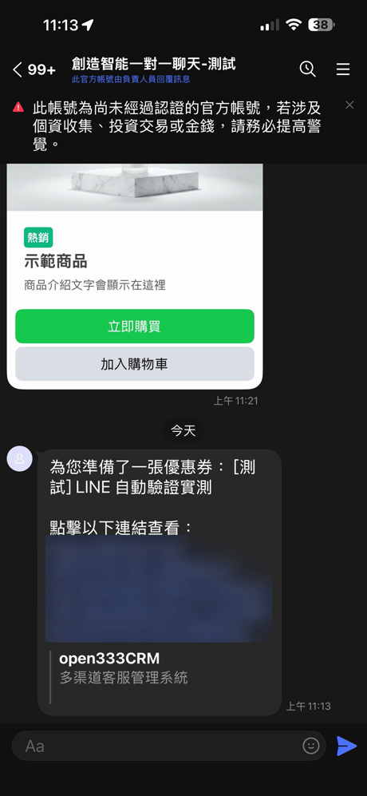
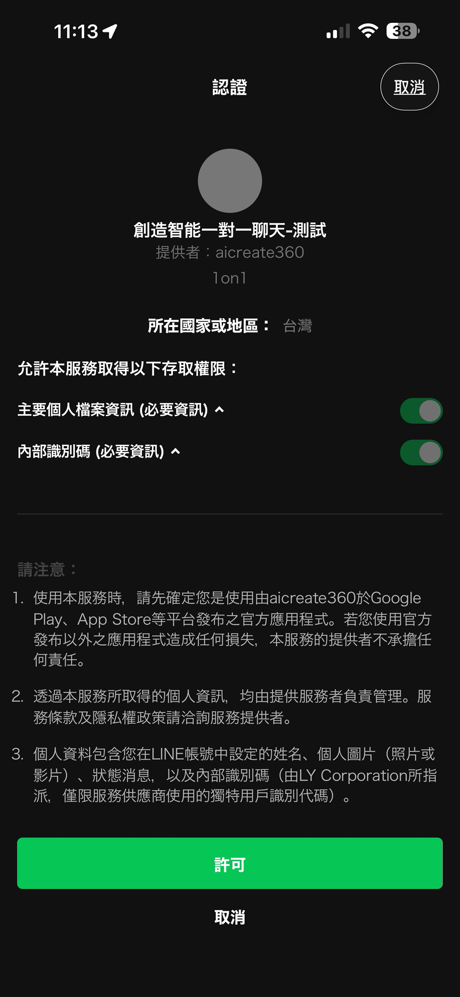
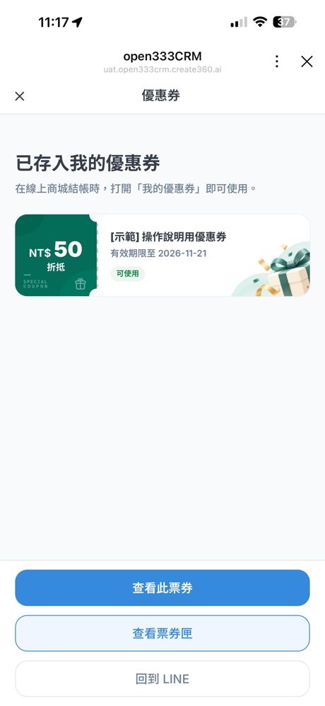
Facebook Messenger 顧客的畫面（這支手機之前已經驗證過，所以直接進入）。返回按鈕會依渠道顯示「回到 Messenger」：
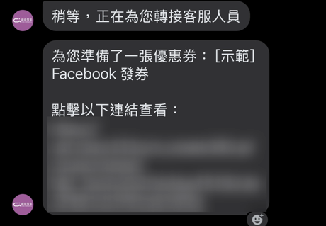
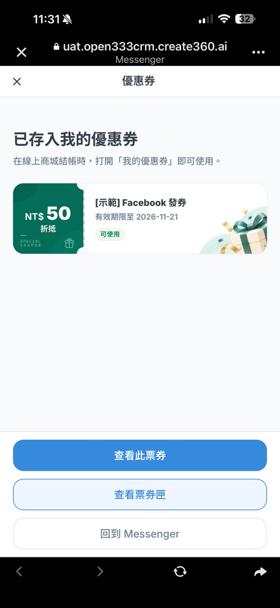
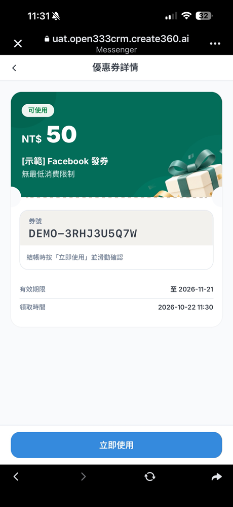
在新的手機或瀏覽器開啟（或連結被轉傳）時，會先要求驗證，畫面只顯示遮蔽後的原本 email，沒有可以改填信箱的欄位：
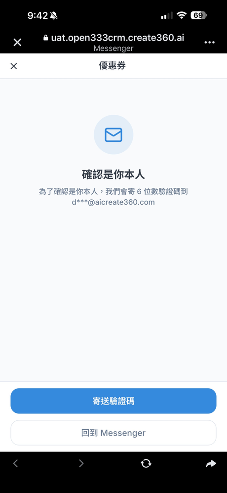
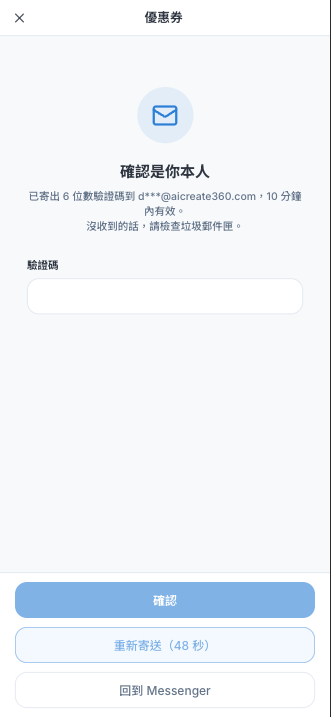
- LINE 自動驗證要先在「設定 → 渠道管理」該 LINE 渠道的「Bot 設定」填好 LIFF App ID 與 LINE Login Channel ID，詳見 15 · 渠道管理。
- LINE 授權畫面顯示的名稱、圖示與說明，來自 LINE Developers 裡 LINE Login channel 的設定，建議改成正式的品牌名稱與 logo。
- 使用 email 驗證時，要在「設定 → 跨渠道綁定」啟用 email 登記。
- 顧客必須從對話中的連結開啟券；直接輸入網址會顯示「請回到對話，點選優惠券連結開啟」。
6 三種核銷方式
顧客券號下方會依核銷方式提示怎麼使用。三種方式核銷完成後，顧客都會看到同一個「核銷完成」頁（可出示此畫面作為使用證明），顯示券名、核銷時間、核銷門市（只有核銷台核銷才有）、券號與核銷方式。暫停發放中的券仍然可以核銷。
6-1 顧客自助：顧客自己滑動確認
- 顧客在券詳情按「立即使用」，進入「確認核銷」頁。
- 畫面提醒「滑動後此券立即失效，且無法復原」「請確認已在結帳畫面，再進行操作」。
- 把底部「向右滑動以核銷」滑到底（超過 90% 才算），券立即核銷。失敗時滑桿會回到起點，並寫明券尚未被使用。
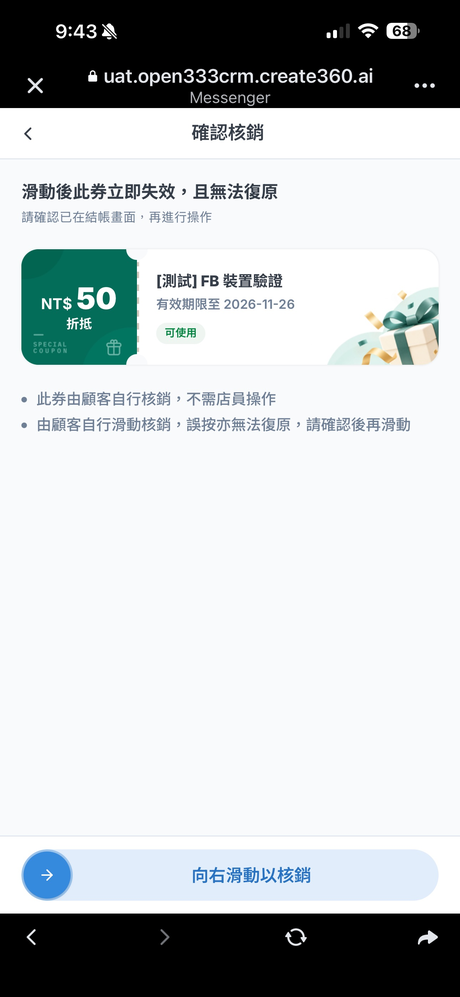
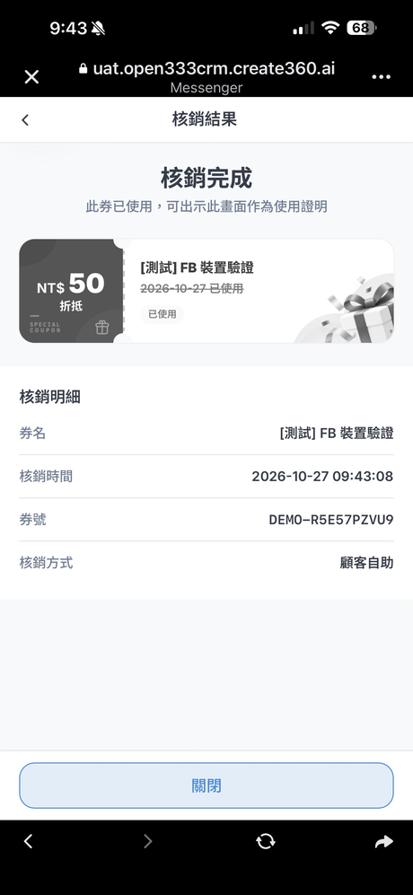
6-2 店員驗證碼：店員在顧客手機上輸入驗證碼
- 顧客在券詳情按「立即使用」，進入「確認核銷」頁，畫面寫「請將手機交給店員輸入驗證碼」，並開始 5 分鐘倒數。
- 畫面中央以大字顯示「使用條件（請店員確認）」，例如「滿 NT$1,000 可用」，店員確認消費金額符合條件。
- 店員在顧客的手機上輸入建立券時設定的驗證碼，按「確認核銷」。
- 核銷完成，顧客看到核銷完成頁。
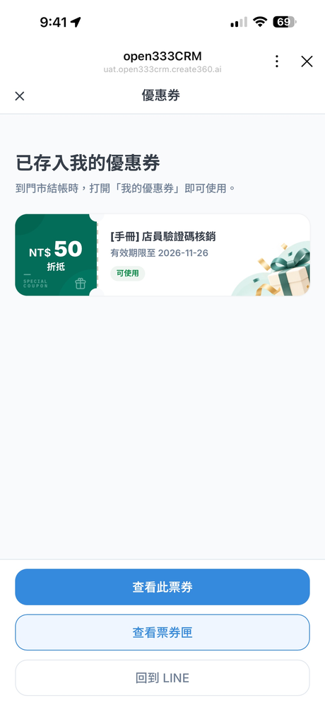
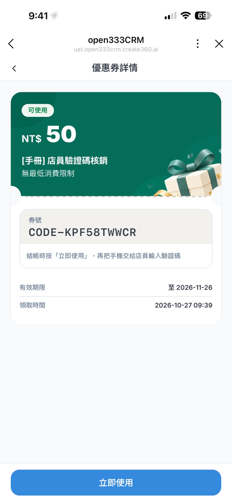
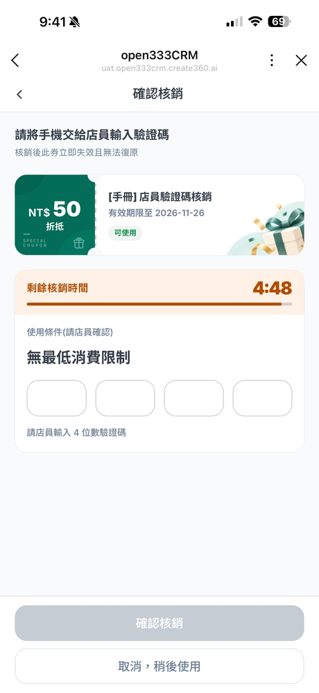
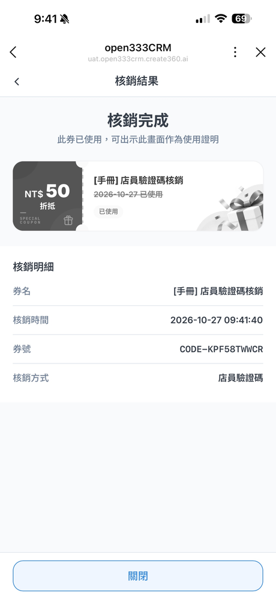
| 狀況 | 畫面與規則 |
|---|---|
| 輸錯驗證碼 | 顯示「驗證碼錯誤，請重新輸入（還可以再試 N 次）」。每次最多錯 5 次，錯滿要回到詳情頁重新開始 |
| 同一張券一直輸錯 | 同一位顧客同一檔券 24 小時內累計錯 10 次，這檔券 24 小時內都不能核銷，顯示「如需協助請聯絡客服」 |
| 5 分鐘倒數結束 | 顯示「核銷時間已結束」，券沒有被使用，可以返回後重新開始 |
| 網路異常 | 顯示「無法確認是否已核銷」，請稍候重新查看這張券；若仍顯示可使用，再試一次 |
6-3 店員掃碼：店員用核銷台掃顧客的 QR Code
- 顧客在券詳情按「出示 QR Code 給店員」，畫面顯示 QR Code 與券號，提醒「掃描時請調高螢幕亮度」。
- 店員在核銷台（第 8 節）的「掃描核銷」用手機鏡頭對準 QR Code；掃不到時改到「手動核銷」輸入 QR Code 下方的券號（連字號可省略）。
- 核銷台顯示確認畫面：面額、使用條件、券名、顧客（名字部分遮蔽）、有效期限與序號。店員確認後按「確認核銷」；按「取消」不會使用這張券。
- 核銷台顯示「核銷完成」，顧客的手機約 3 秒內自動切到核銷完成頁，並顯示核銷門市。
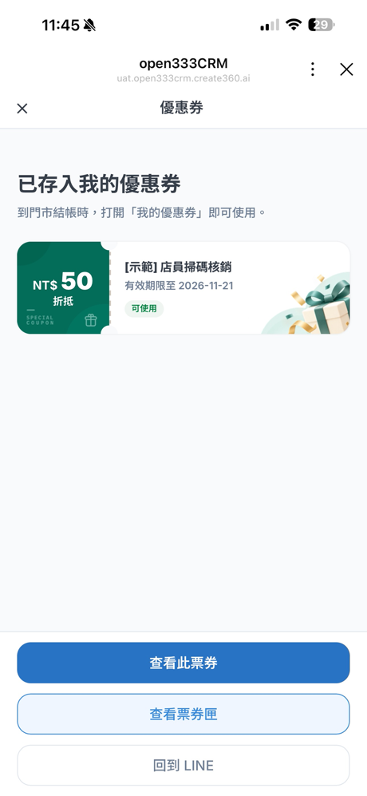
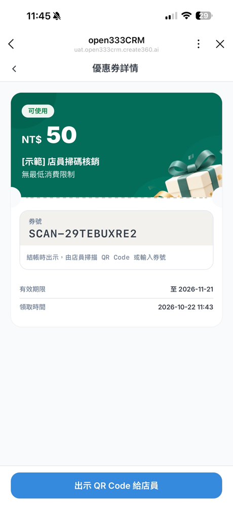
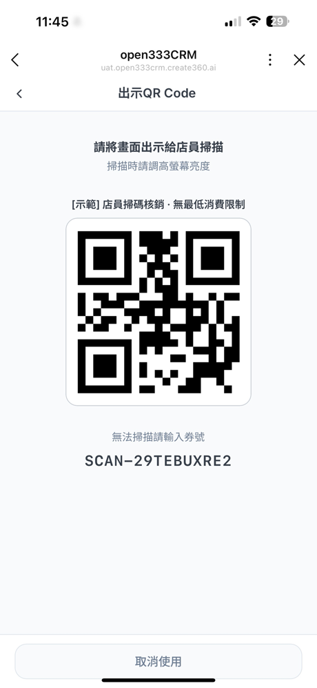
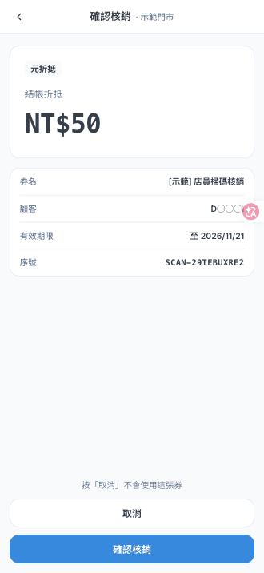
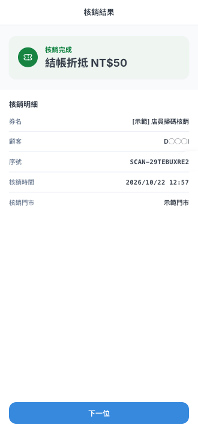
7 門市與核銷帳號
「店員掃碼」需要店員登入核銷台。從「設定 → 門市與核銷帳號」為每間門市建立帳號，同一門市的店員共用這組帳號。需要「檢視門市與核銷帳號」權限才看得到這頁；只有檢視權限時，按鈕會停用並顯示「需主管權限」。
新增門市
按右上角「新增門市」，輸入「門市名稱」（最多 50 字，例如「內湖門市」）。門市名稱會印在櫃檯海報上。新增後門市卡片顯示「營業中」。
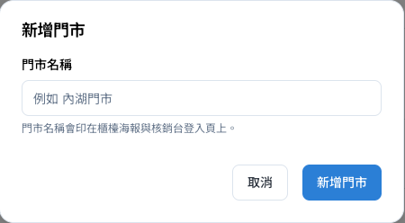
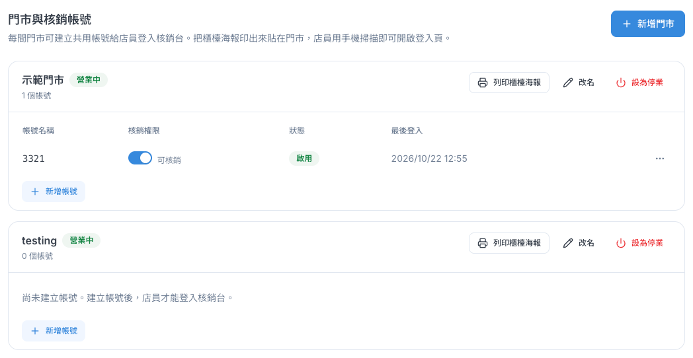
門市卡片右側的按鈕：
| 按鈕 | 作用 |
|---|---|
| 列印櫃檯海報 | 產生 A4 海報：門市名稱、「門市核銷台」與一個 QR Code。店員用手機相機掃描就能開啟核銷台登入頁。QR Code 只會開啟登入頁，不含任何密碼，仍要輸入門市帳號與密碼才能核銷。掃不到時，海報上也印有可以直接輸入的網址 |
| 改名 | 修改門市名稱 |
| 設為停業／恢復營業 | 停業後這間門市的所有帳號都不能核銷，已登入的裝置下一次操作就會被擋 |
新增核銷帳號
在門市卡片按「新增帳號」：
| 欄位 | 規則 |
|---|---|
| 帳號名稱 | 只能使用英文小寫、數字與連字號，3–32 字，例如 dt3c-neihu。所有商家的帳號名稱都不能重複，被刪除的帳號名稱也不能再用 |
| 密碼 | 至少 8 字。可按「產生隨機密碼」產生 12 字的密碼（不含容易看錯的 0、O、1、l、I） |
| 可以核銷 | 預設勾選。取消勾選後，這個帳號登入後會直接顯示「沒有核銷權限」，無法查券也無法核銷 |
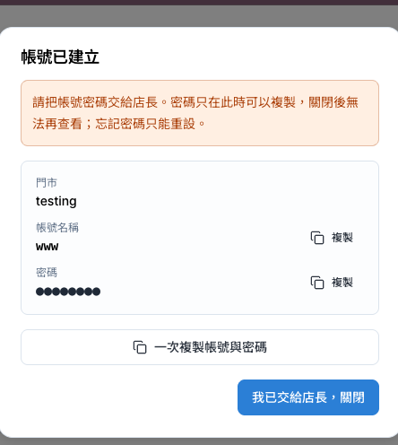
管理帳號
帳號列表顯示帳號名稱、核銷權限（可直接切換開關）、狀態（啟用、停用、鎖定中至 HH:mm）與最後登入時間。每一列的「⋯」選單：
| 動作 | 作用 |
|---|---|
| 重設密碼 | 設定新密碼（可用「產生隨機密碼」）。重設後所有已登入的裝置都要用新密碼重新登入，被鎖定的帳號也會解除鎖定。新密碼同樣只在重設完成時顯示一次 |
| 強制登出 | 這個帳號在所有裝置都會被登出，例如手機遺失時使用 |
| 停用帳號／啟用帳號 | 停用後不能登入與核銷，之後可以再啟用 |
| 刪除帳號 | 無法復原，帳號名稱之後也不能再使用。只是暫時不用的話，建議改用「停用」 |
8 核銷台（店員使用）
店員用手機掃櫃檯海報的 QR Code，或在瀏覽器開啟海報上的網址，進入「核銷台」。
登入
- 輸入「門市帳號」與「密碼」，按「登入」。忘記密碼請聯絡店長，由店長在後台重設。
- 「保持登入」預設勾選，登入狀態保留 30 天；不勾選時保留 12 小時，關閉分頁就要重新登入。共用裝置請不要勾選。
- 同一個帳號連續輸錯 5 次密碼，會鎖定 15 分鐘，畫面顯示倒數。店長在後台重設密碼可以立即解除鎖定。
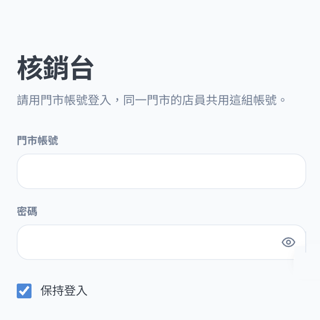
核銷
登入後的主畫面有「掃描核銷」與「手動核銷」兩個分頁，上方顯示門市名稱，右上角「紀錄」顯示今天的筆數。
| 分頁 | 操作 |
|---|---|
| 掃描核銷 | 用手機後鏡頭對準顧客手機上的 QR Code，距離約 15–25 公分最容易辨識。光線不足時可開手電筒；8 秒掃不到會提示改用手動輸入。第一次使用要允許瀏覽器使用相機 |
| 手動核銷 | 輸入顧客券上 QR Code 下方的序號，連字號、空白、大小寫與全形都不影響，按「查詢」 |
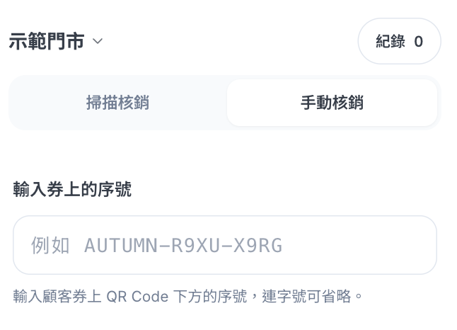
查到券後會顯示確認畫面，店員核對面額、使用條件（例如「本次消費未滿 NT$1,000 不能使用」）與顧客後按「確認核銷」。結果畫面：
| 結果 | 意思與處理 |
|---|---|
| 核銷完成 | 顯示券名、顧客、序號、核銷時間與門市，按「下一位」繼續 |
| 已於 MM/DD 使用過 | 這張券已經用過，畫面列出使用時間與門市，請顧客確認 |
| 已於 MM/DD 到期 | 過期的券無法核銷 |
| MM/DD 起才能使用 | 還沒到生效日 |
| 找不到這張券 | 請確認序號是否正確，重新輸入或重新掃描 |
| 這是共用券號 | 顧客出示的是共用碼，分不出是誰的券，請改掃顧客手機上的 QR Code |
| 需在顧客手機上核銷 | 這張是店員驗證碼券或顧客自助券，不能在核銷台核銷 |
| 活動已提前結束／尚未領取／尚未開啟 | 這張券目前不能使用 |
| 網路不穩（結果未確認） | 按「重試」確認結果，不會重複核銷 |
每種「無法使用」的結果都附一句「可以這樣跟顧客說」，店員可以直接照念。
今日紀錄
按右上角「紀錄」查看「今日核銷紀錄」：今天（台灣時間）本門市所有帳號在核銷台核銷的券，最多 500 筆，由新到舊。上方統計今日筆數、折抵金額、贈品與兌換份數，點一列可展開明細。
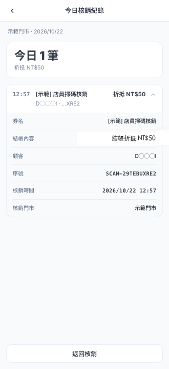
帳號被停用、門市停業、密碼被重設或被強制登出時，核銷台的下一次操作會顯示對應的說明（例如「此門市帳號已停用」「請重新登入」）。顧客在場時會加一句「您的券沒有被使用，請稍等一下」，方便店員向顧客解釋。
9 查看核銷紀錄與成效
券詳情頁上方的數字：
| 指標 | 意思 |
|---|---|
| 發送 | 已發出的券數 |
| 開啟連結 | 顧客點開券連結的張數（還沒驗證身分也算），點擊率＝開啟連結 ÷ 發送 |
| 領取 | 顧客完成驗證、券存入「我的優惠券」的張數 |
| 開封 | 顧客打開券詳情的張數 |
| 核銷 | 已使用的張數（包含三種核銷方式） |
| 核銷率 | 核銷 ÷ 領取 |
下方「序號明細」列出每一張券的序號、顧客、發放來源（例如「對話發券」與座席名稱）、狀態、領取與核銷時間。顧客來電詢問時，可以在「序號或顧客名稱」直接輸入序號或名字查詢，也能依狀態、領取時間、核銷時間篩選，或按「匯出 CSV」。超過 5,000 筆時匯出會改在背景產生，完成後以站內通知提供下載。「設定」分頁可以看這張券的所有設定。
其他查看的地方：
- 收件匣右側「已發優惠券」：這位顧客收過哪些券、誰發的、是否已使用，顧客開券或核銷時會即時更新。
- 數據報表 →「優惠券成效」：期間內的發出、已領取、已核銷與核銷率，每日發放與核銷趨勢（核銷為虛線，兩者數字相同時也看得到發出線），以及依核銷數排序的券排行。需要「檢視報表」權限。
- 核銷台「今日紀錄」：門市當天在核銷台核銷的券（見第 8 節）。
10 管理已發布的券
在優惠券列表每一列右邊的「⋯」可以做以下操作（需要「管理優惠券」權限）：
| 操作 | 效果 |
|---|---|
| 查看明細 | 進入券詳情頁 |
| 編輯 | 可修改的欄位見第 3 節；標示發布後鎖定 的欄位不能改 |
| 暫停發放／恢復發放 | 暫停期間不能再發券，已發出的券仍可使用 |
| 提前結束 | 立即停止發放，已發出但還沒使用的券會一起作廢。按下前會顯示「已有 N 張被領取，其中 N 張尚未使用」 |
| 複製 | 以這張券的設定建立一張新草稿 |
| 刪除 | 只有草稿可以刪除，刪除後無法復原 |